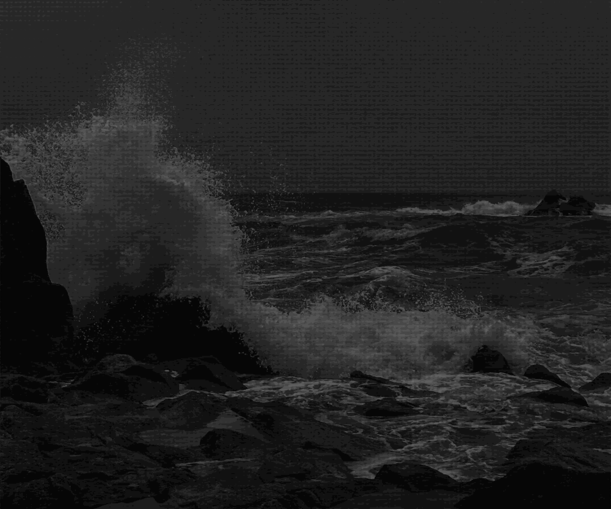
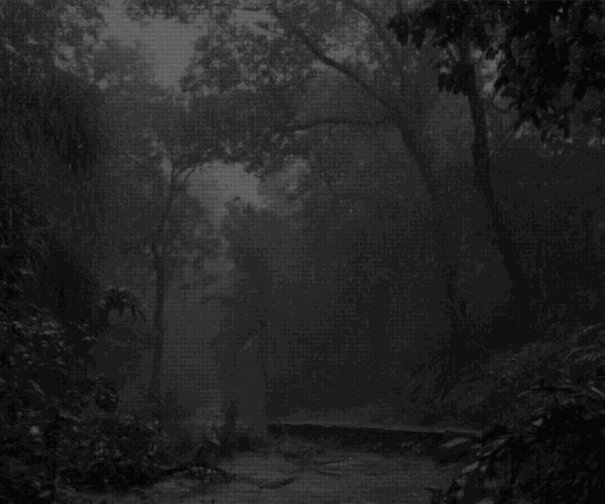
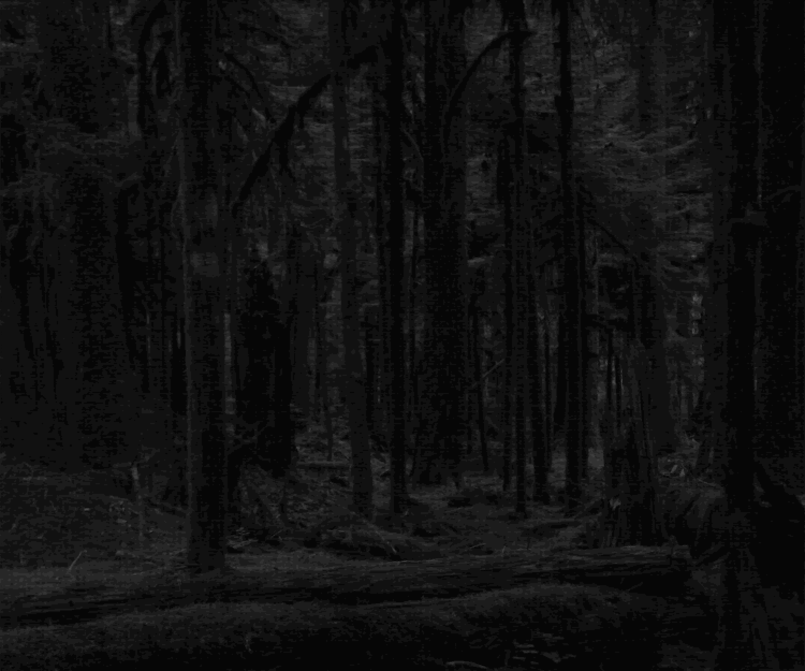
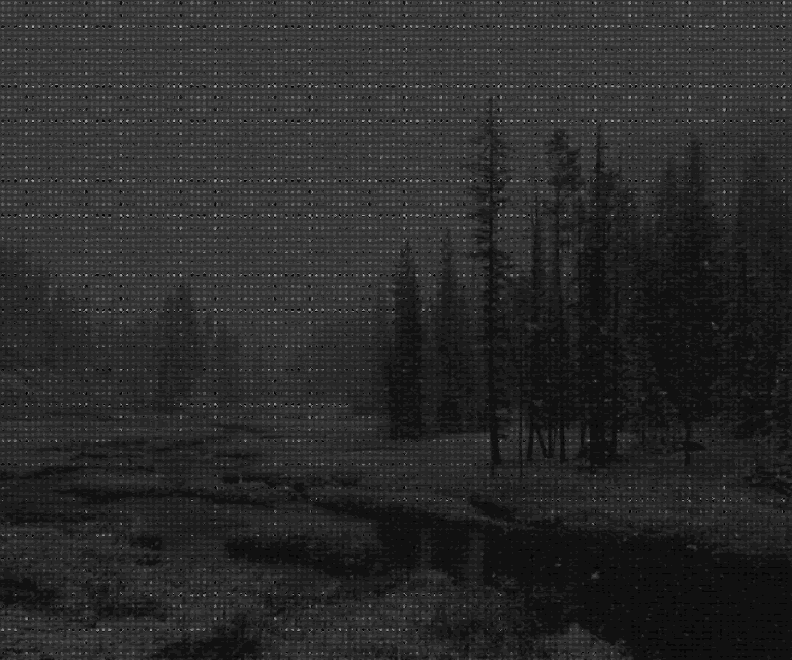
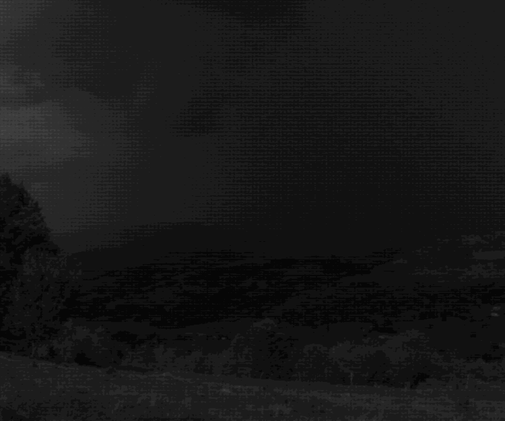

⚠ — Notices — 阅览之前请注意
本站所描述故事中出现的所有地点、事件、人物团体表现等均与现实无关，纯属在时代考究基础上进行艺术性虚构改编。浣熊在此郑重承诺没有任何一只浣熊受到过伤害 ᐛ
本站所使用的代词“他”泛指一切人类及类人生物，取“人也”之义，不具现代语境中的性别指向
本站的内容不符合普世意义上的健康价值观，极不建议道德感强的人阅览
大体包含以下等可能带来身心不适的内容：
【邪恶宗教】 【狂热信徒】 【血祭仪式】 【歪理邪说】 【集体癔症】
【法外狂徒】 【血腥暴力】 【虚构犯罪】 【食人情节】 【内脏外露】
【精神崩溃】 【跟踪骚扰】 【偏执妄想】 【罪恶都市】 【噩梦缠身】
【神秘自然】 【种族毁灭】 【灵异事件】 【都市怪谈】 【精神污染】
【人体实验】 【罪孽遗传】 【器官贩卖】 【文明断层】 【反乌托邦】 🍽️🥩 请 自 行 取 用 🥩🍽️
本站所使用的代词“他”泛指一切人类及类人生物，取“人也”之义，不具现代语境中的性别指向
本站的内容不符合普世意义上的健康价值观，极不建议道德感强的人阅览
大体包含以下等可能带来身心不适的内容：
【邪恶宗教】 【狂热信徒】 【血祭仪式】 【歪理邪说】 【集体癔症】
【法外狂徒】 【血腥暴力】 【虚构犯罪】 【食人情节】 【内脏外露】
【精神崩溃】 【跟踪骚扰】 【偏执妄想】 【罪恶都市】 【噩梦缠身】
【神秘自然】 【种族毁灭】 【灵异事件】 【都市怪谈】 【精神污染】
【人体实验】 【罪孽遗传】 【器官贩卖】 【文明断层】 【反乌托邦】 🍽️🥩 请 自 行 取 用 🥩🍽️
❓ — Commencement and Conclusion at CentEnd — 主世界

📽️
Cinematic Apparatus
電影裝置輪

🎠
Pharmakon
法爾馬克

🩻
Everyone's Just Blood in an Ice Tray
宛若冰盤裡的血塊般冷漠

📮
Larkspur for Your Tombstone
獻給你不存在的墓碑

🗞️
Beretninger om forbudt kjærlighet
桃色新聞

🚂
Crepuscular Ray
曙暮輝

🫀
Ashes in the Vortex of Nothingness
沒入虛無漩渦的餘尘
— To Be Continued —